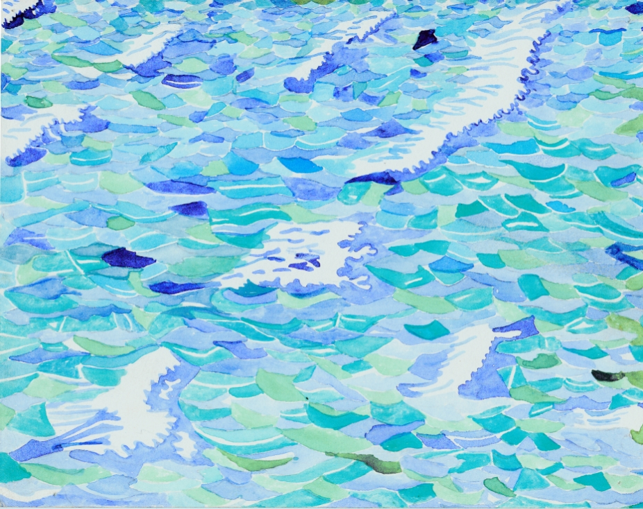
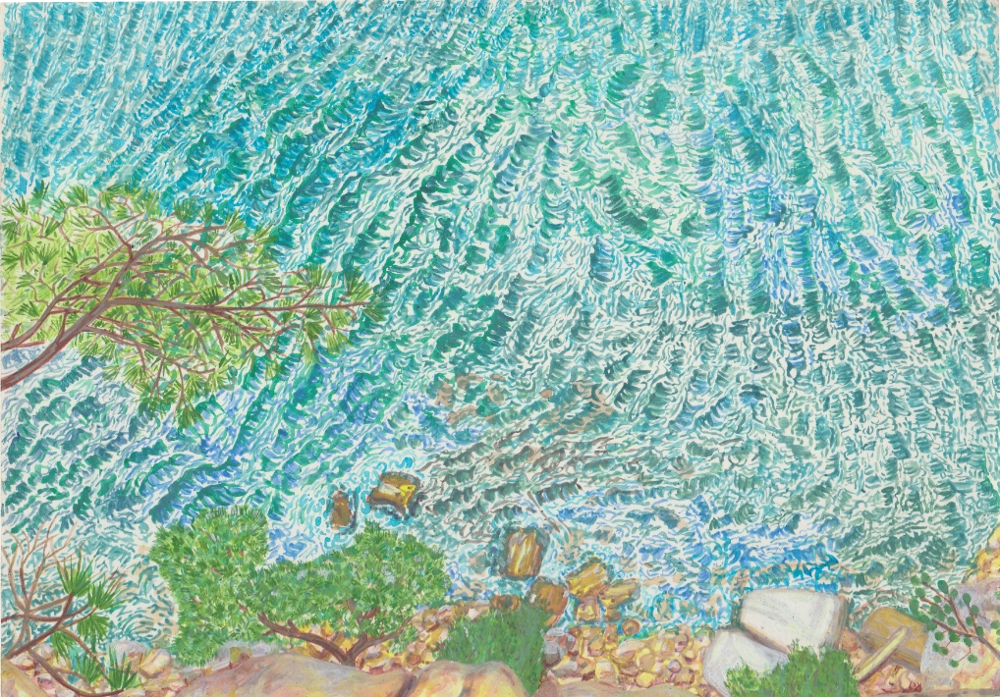
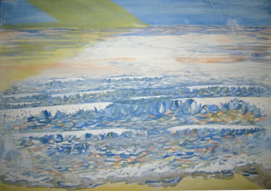
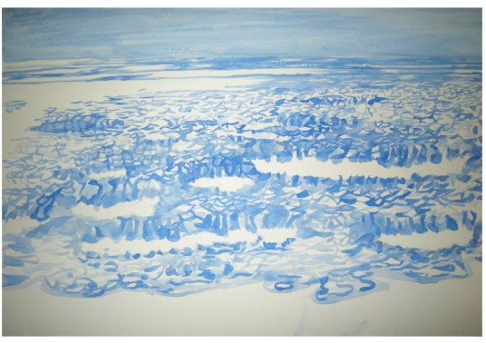

Water off a ducks back.
The home thoughts.
Several big mistakes in navigation, stress and plan altering but considering the reasons and results I am still happy. A lot found in Tokyo so few photos to start with. A reminder that I had stared several waves pictures with the surprise landing at the (Katsushika) Hokusai Museum walking after the first night into the are3a called Sumida, which not only has his work but a lot of it. This is in part because there is a special exhibition on too. I am here for the 'Theater, Dance, Music- Enjoy the Edo period Performing Arts with Hokusia'. It will end 26th May and if the pictures go away is unmissable. Certainly it is a parallel theatre to Elizabethan times in the actors having publicly recognised airs and special manners. Scripts are faithfully made available to the public called and verses and songs named 'joruri' are reviewed and published as collections. Publicty is both by traditional guild or family types and special event leaflets called 'surimono' were created in a style that would not go amiss today. He is said to have made 40,000 pictures in his 90 years of which many are finished complete public works.
To think I only knew of this Japanese artist, name forgotten if ever really kept close who had these iconic waves made in a style I think shows how real a figurative, stylistic approach can be, proven even more by his many many portraits. There is a lot of memorabilia too and I am figuring much is new as well as history and various ideas or facts about the pictures and times. He has also a style that meets with Herge I feel. His great scenes with the use of panorama between key elements make me think of Rex Whistler, local to the Peak District where I am near to now.
I could not photograph his pictures of course but there is a great gimicky idea where you can scan yourself into his 'bad man dance' motives beside you by a large staged enlarged picture. I figure there is no copyright on that but it is still for the public buyer rather than public showare.
So I hope you like my waves. They are a theme elsewhere before this trip too. I think water is not the same to people, waves not the same. There is contant movement and the stillest lake there is either constanct play of light or search to make the remake the image in the mind. That is why patterns or styles can be so different portraying the same thing without needing realism to in fact conjure real feelings for the sea.
Please click on any photo to move it to the main frame and with a description




